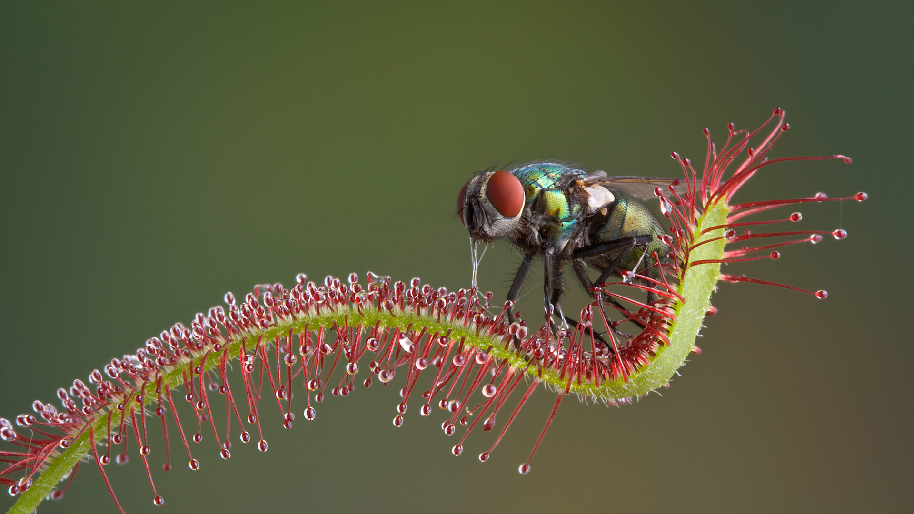

The poetic sounding name of the small flowering plant called the sundew is deceptive. The sundew is so named because the tiny drops of fluid on its basal leaves look like dewdrops shining in the sun. However, this sticky fluid is actually a lure to trap insects, which the plant then digests. The surfaces of sundew leaves are covered with hundreds of hairlike projections. These projections are tipped with glands that exude the sticky fluid. Insects are attracted to the fluid and are captured by flexible tentacles (which are actually stalked glands) on the upper surface of the leaf. When the insect sticks to a tentacle or group of tentacles, all the neighboring tentacles begin to bend toward the center of the leaf blade, rolling the blade into a “fist” that holds the trapped insect. When the prey has been thus engulfed, the tentacles secrete enzymes that digest its body. About two days are required for the plant to digest an insect. Then the leaf reopens, and the trap is again set for another victim. The name sundew is most commonly applied to members of the genus Drosera, of the sundew family, Droseraceae. These plants are widely distributed in tropical and temperate regions, chiefly in wet, boggy places. They may grow to about 10 inches (25 centimeters) tall. Usually the small, nodding flowers—white, pinkish, or purple—rise from a rosette of basal leaves. The leaf blades are round or oval.
Here are some facts about Sundew (Drosera)!
| Name | Sundew (Drosera) |
| Botanical name | Drosera tokaiensis |
| Heigth | 1 and 100 cm (0.39 and 39.37 in) in height, depending on the species. Climbing species form scrambling stems which can reach much longer lengths, up to 3 m (9.8 ft) |
| Kingdom | Plantae |
| Conservation status | Threatened or Endangered |
| Environment | Sundews generally grow in seasonally moist or more rarely constantly wet habitats with acidic soils and high levels of sunlight. Common habitats include bogs, fens, swamps, marshes, the tepuis of Venezuela, the wallums of coastal Australia, the fynbos of South Africa, and moist streambanks. |
| Habitat | Worldwide/Australlia(major) |
| Live Specimens | NA |
| Check out the wikipedia page here! | |